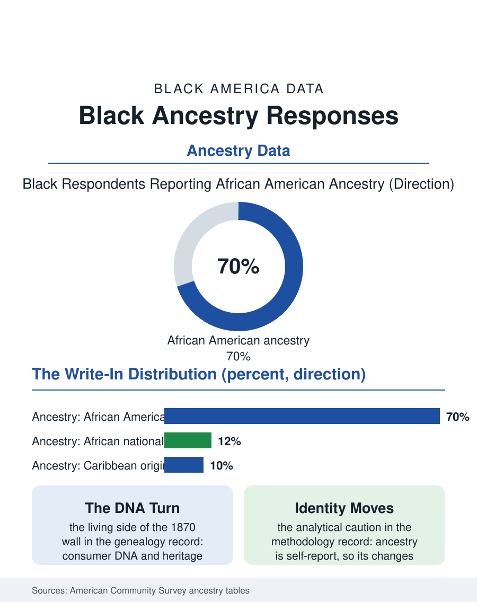

Black Census
In Their Own Words: Black Ancestry Responses
The ancestry write-in is the one place Americans name themselves, and Black answers compress the whole history, African American modal, African and Caribbean nations rising. The ancestry file.

The census ancestry question asks Americans to name their ethnic origins in their own words, and Black Americans' answers are a compressed archive of the nation's history: the overwhelming majority write some form of African American or Black, a substantial minority name African nations and Caribbean islands, and a long tail records the creole, mixed, and American answers of a people whose paper trail was designed to disappear. This article reads the ancestry file.
What the Write-Ins Say
The American Community Survey codes millions of write-in responses, and in its ancestry tables the Black population distributes instructively. The modal answer, by an enormous margin, is the unhyphenated one, African American in its several phrasings, an identity consolidated across the twentieth century that the form now records as the population's default self-description. The African national answers, Nigerian, Ethiopian, Ghanaian, Somali, Kenyan, map the immigration files with precision, concentrated in the first and second generations and in the gateway metros, while the Caribbean answers, Jamaican, Haitian, Trinidadian, do the same for the older immigrant stream. Beneath these, the file holds its distinctive strata: the creole answers of Louisiana, recording the French and Spanish colonial layering; the Gullah and Geechee answers of the Carolina and Georgia coast, small in number, immense in continuity; the American answer, given by a meaningful share of Black respondents, especially in the South, a response the census researchers interpret variously as assertion, as the honest report of origins the slave system deliberately unrecorded, and as the oldest claim in the file, that this population's roots are simply here. A further stratum reports European and Native ancestries alongside or instead, recording in the write-in line the mixed genealogy the DNA era has made undeniable, with the one-drop era's categories straining to contain it.
The Genealogy Economy
The ancestry answers do not stay in the survey; they power an industry and a civic movement. Consumer DNA testing sold tens of millions of kits substantially on the promise this file embodies, the recovery of African origins the paper record denied, and the African ancestry services, matching testers to ethnic groups and regions, built a category of their own on Black demand. The genealogy file elsewhere in this atlas describes the archival wall at 1870, the first census to name the formerly enslaved; the ancestry answers are the living side of that wall, the descendants' own account of who they are, which increasingly incorporates the DNA evidence, the identified nation, the named people, into the family story. Cultural institutions have organized around the shift: heritage travel to Ghana, Senegal, and Nigeria draws growing Black American traffic in the tourism data, citizenship and repatriation programs in several African states formally court the diaspora, and the census of the future faces a classification question the ancestry file previews, whether Black American identity, in the children of immigrants and the DNA-informed alike, differentiates into named peoples in the data as it already has at the kitchen table. The survey's coding, which must fit the write-ins into boxes, will decide how much of the differentiation the official record can see.
Identity as Data
The file's analytical caution is that ancestry is a self-report, not a blood assay, and its changes across surveys measure identity's motion as much as demography's. The rising African national answers measure immigration, yes, and also the second generation's choice to specify; the steady American answers measure rootedness; the small but growing multi-ancestry answers measure the form finally permitting what families always knew. For policy and research the ancestry tables do practical work: they size the populations for whom the generic Black category conceals distinct needs, the Haitian Creole speakers in the language file, the Somali community's specific health profile in the health files, the Nigerian second generation's educational trajectory in the schools data. The ancestry file closes on the write-in line itself, the one place in the federal statistical system where the respondent chooses the words. Every other file in this atlas counts people inside categories the state defined. This one records, in shaky handwriting and careful print, millions of individual decisions about what to call the line one descends from, slave ship and immigrant ship, Carolina coast and Lagos, all of it claimed, in the end, by the same hand: mine. The demographers code it. The ancestors, one suspects, would recognize the impulse instantly.
More in Black Census
The Black Population of the United States: Size, Definitions, and Distribution
The Black population of the United States totals 52.8 million — 15.4 percent of the nation. How the Census Bureau defines and counts the population, and where it lives.
Black Median Household Income in the United States
Black median household income stands at $56,490 in the Census Bureau's annual income report — how the figure is measured, how it compares, and what drives it.
The Black Poverty Rate: Levels, Children, and the Long Trend
The official Black poverty rate is 17.1 percent — against 11.1 percent nationally and 7.7 percent for non-Hispanic White Americans. How poverty is measured and what the data show.
Source: U.S. Census Bureau, American Community Survey ancestry tables; consumer genealogy and heritage travel data.